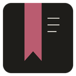

Downloads
Version 0.97.0, released 18 November 2026. Start with NorthRay Launcher, or download any app on its own.
NorthRay Launcher
Installs, updates and opens NorthRay apps, and checks each download against its published checksum before running it.
NorthRayLauncher-Setup-0.97.0.exe · 1.8 MB
SHA-256 checksum
db17d5dbc602aa0dab05402349a4105fd05c32bf7158970603e8cc0d81baf850Individual apps
 Download
DownloadNorthRay Writing Studio
A writing and publishing studio for authors: worlds, series and books, through to finished editions.
SHA-256 checksum
99aaca31c355d1176cbfca6c24ab3ecd7ea8cdd4762a3394018d6e3369942931 Download
DownloadNorthRay Browser
A web browser for Windows in the NorthRay look, with creative tools planned.
SHA-256 checksum
61f2277229f94463d3af8e48dc9ac84d0219e781ceb2d64a77b899b9ed385b83 Download
DownloadNorthRay Files
A file manager for Windows in the NorthRay look, with tools for creative work.
SHA-256 checksum
b8fbf8ed081dc3b232bb4eddb51737704018cab7a13a71d0c8f33ed0faa6b228 Download
DownloadNorthRay Capture
Livestreaming and recording for Windows, in the NorthRay look. In development: it captures, routes, records and streams to several platforms at once (recording and streaming not yet tried on real hardware).
SHA-256 checksum
e79dca54e8d7d84b22c8aa9b60946c3ce9667851678f68140a33b9bdf33b58a8
CJ Philip Community
A separate launcher for the apps associated with author and broadcaster CJ Philip, such as CJ Radio, the home of The CJ Philip Show. It installs, updates and opens them, and updates itself. NorthRay Launcher doesn't include it, and nothing else needs it. More about CJ Philip.

DownloadCJ Philip Community
SHA-256 checksum
2cff70ba98d3fee64e71b51012b67a72bcdf048eb0d4e2bb563b088c2346f9e7
Before you install
- Windows 10 or 11, 64-bit. The Writing Studio and NorthRay Browser use Microsoft Edge WebView2, which comes with Windows.
- No administrator permission or account needed. Everything installs for your Windows account only.
- Free to use. No subscriptions, paywalls or deliberately restricted features, and no account to create.
- Windows may warn you. The installers aren't code-signed yet, so SmartScreen may say "Windows protected your PC". Choose More info, then Run anyway, only if you downloaded the file from this page. You can check it against the SHA-256 checksum.
- Uninstalling: use NorthRay Launcher (or CJ Philip Community for CJ apps), or Windows Settings, Apps, Installed apps. Your settings and libraries are kept.